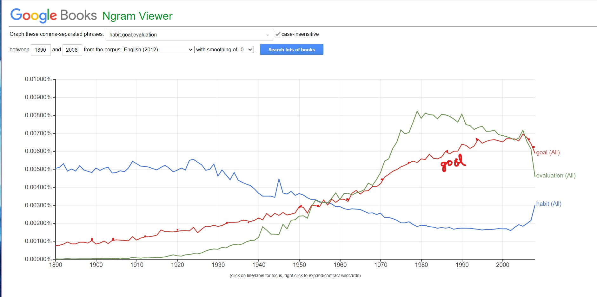
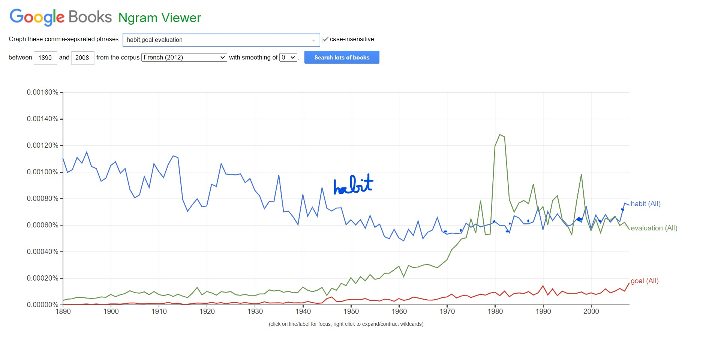

datasciY.com
My blogs on more general subjects will be posted here.
Bill showed me this really cute song, Wear-A-Mask, set to Disney's dancing teacups scene from the Beauty and the Beast movie. It's produced and sung by professionals. I already like Mrs. Potts and Mr. Lumiere, so it was an easy sell for me. I think the lyrics are also very well done. The song expresses many of the thoughts and feelings I would like to express. "Try not to be so grouchy, have some faith in Fauci." and "Such a shame that asking folks to follow rules gets you harassed." and "Never seen folks so dramatic... over a f***ing piece of fabric!" and "'HaRd tO BReAtHe!' 'fEelS ToO hOt!' Quit your bitchin'. There's a thought!" and "Try to think of someone other than yourself. It's all we ask!" and "mask debaters" sounded mask-[tur]baters were gems. :-)
Trump twitted on Oct 2nd Friday 12:54 AM EST, that he tested positive for Covid-19, after hanging out for weeks without masks in close quarters with Hope Hicks who tested positive for Covid-19 on early Thursday morning, Oct 1st. I say this is Karma. But I am worried for Chris Wallace. Since the debate was on Tuesday night from 9 to 10:30 pm, that was only 50.5 hours earlier. Trump was probably tested earlier on Thursday morning, right after Hope Hicks' test came back positive, but chose not to make it public until the next morning. Yes, Joe Biden should be tested right away, but Chris Wallace should be tested right away too. That would suck if he caught the virus from Trump, after moderating a train-wreck debate where Trump constantly interrupted and shouted at both Biden and Wallace. Also Wallace was sitting down while Trump was standing up. The virus spreads farther in a downward path. Dear Mr. Wallace, I wish you well and hope you will be safe from Trump's germy Coronavirus.
On Monday October 5, 2020, Fox News announced that Chris Wallace tested negative for Covid-19. Mr. Wallace waited until Monday to take the test, 5.5 days after his exposure to the virus from Donald Trump. He wanted to reduce the likelihood of a false negative test result. If infected, the Covid-19 virus takes 4-5 days to multiply to a sufficient quantity in the body to produce a positive test result. Joe Biden has tested negative even 10 days after the debate, so he seems to have cleared the danger from Trump's germs. :-)
By chance I came upon videos giving persuasive arguments that The Big Bang may never have happened! I thought the Big Bang theory was gospel since around 1990. It's upsetting to think that we could have been so wrong. Accepting fuzzy numbers from experiments when they matched our expectations, and throwing out results after over-zealous scrutiny when they contradicted our expectations, seem to have been the culprit once again. This is extremely disheartening. Since I know how extremely accurate the experiments are, I can't believe we could have made such a gigantic error over several decades. Wow, if even astrophysics experiments can be distorted by confirmation bias, then I don't know what hope we have for more mundane experiments in economics, public health policy, and politics. Sigh...
I had some more time so I began listening/watching more material from LLP Fusion. His podcast series where he talks about the evidence that the Universe is trillions of years old was a red flag for me. He says that because the fastest observable celestial object travels at 300 x the speed of light now, and he believes this maximum speed has not changed from an earlier time period because there was also no earlier implosion, that nothing has traveled faster than at 300 x the speed of light. Then he uses the fact that the largest observable galaxy cluster is 6 billion light years in diameter. These two "facts" are used to prove that the Universe is "clearly" trillions of years old. [The time it takes celestial objects traveling at 300 x light speed to spread out to a diameter of 6 billion light years across. 3 billion x 300 x speed of light = 900 billion light years. My calculation, starting from the center, and some particles going in one direction while others going in the opposite direction.] You cannot use one assumption to prove another assumption. So, this was a red flag for me. Then I did some more research and dug up other people who also seem to think his theory is indefensible. Now I think he may be a crackpot. His theory is possible, but the dominant theory of Big Bang seems much, much more likely.
This episode did have a benefit of making me rethink the validity of the Big Bang Theory. I was reminded that it's still a theory and not gospel yet. There's still too much we don't know for me to believe it with so much confidence. I should only cautiously believe it, since it's the best theory available to us, but not place too much confidence until we have a better understanding of dark energy and dark matter. (Estimated to be 95% of our universe as seen here. ) This seems to me rather large holes in our understanding of our Universe. ;-)
Google Ngrams chart showing "habit, goal, and evaluation" word frequencies in English books over time. The chart shows that English language books wrote about "habit" more often than "goal" or "evaluation" during earlier years, from 1890 to about 1955. "Habit" was less popular after 1955, but it was becoming sharply more popular from 2007 to 2009. This book is about habits and how to form good habits we wish for.
Google Ngram is a type of machine learning task that can be performed on scanned text documents. It can be used to find which words are becoming more popular, as shown here. Or it can be used to study which words are frequently used together or nearby. The multi-word Ngram uses k-nearest neighbor type of machine learning model to compute distances across word combinations. Google freely makes the full data of scanned books available on its website for further evaluation using any other user desired software & tools.

Habit was highest in 1890 .005%, then declined to .002%, and increasing in final year 2008. Goal and Evaluation started from zero-.001% to .007%-.008% during 1975-2000, then declined sharply in 2008 to .005%-.006%.

The word "habit" is highest among the three words, but the levels are lower than in English books for all years, .0012% seems to be the highest level. Need to test this again using the same words in French to see if the relationship holds. It seems like Ngram is not translating the words into French, but is looking for English words in French books.